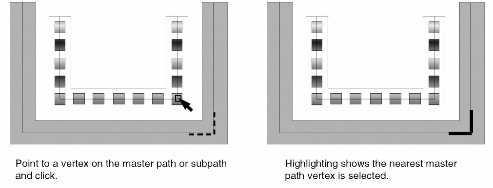
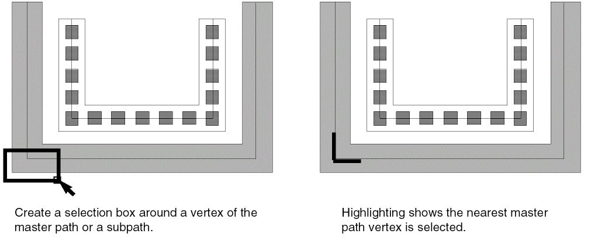

Selecting a Multipart Path Vertex
For multipart paths, a vertex is a point on the master path centerline where two segments join. You can select a vertex of the master path in a multipart path. To do so, you either select the master path vertex directly or select the nearest vertex of a subpath.
To select a vertex of the master path, do one of the following in partial selection mode:
-
Point to a vertex on the centerline of the master path or centerline of a subpath and click on it.
As you point, the nearest master path vertex is highlighted with dotted lines.
If you are not able to click a centerline vertex, the current setting of the Gravity option is too restrictive. In the Layout Editor Options form, turn off Gravity. -
Create a selection box around a vertex on the centerline of a master path or subpath. If you click the corner of a subrectangle, the nearest master path vertex is selected.

Related Topics
Return to top